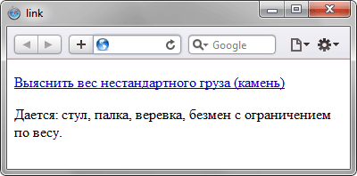

Псевдокласс :link
Псевдокласс :link применяется к ссылкам, которые ещё не посещались пользователем, и задаёт для них стилевое оформление.
Синтаксис
Селектор:link { ... }Пример
<!DOCTYPE html>
<html>
<head>
<meta charset="utf-8">
<title>link</title>
<style>
a:link {
color: #0000d0; /* Цвет ссылок */
}
a:visited {
color: #900060; /* Цвет посещенных ссылок */
}
</style>
</head>
<body>
<p><a href="task2.html">Выяснить вес нестандартного груза (камень)</a></p>
<p>Дается: стул, палка, веревка, безмен с ограничением по весу.</p>
</body>
</html>Результат данного примера показан на рис. 1.

Рис. 1. Результат использования псевдокласса :link
Спецификация
| Спецификация | Статус |
|---|---|
| Selectors Level 4 | Рабочий проект |
| Selectors Level 3 | Рекомендация |
| CSS Level 2 (Revision 1) | Рекомендация |
| CSS Level 1 | Рекомендация |
Браузеры
| Internet Explorer | Chrome | Opera | Safari | Firefox |
| 3 | 1 | 3.5 | 1 | 1 |
| Android | Firefox Mobile | Opera Mobile | Safari Mobile |
| 1.5 | 1 | 4 | 3.2 |